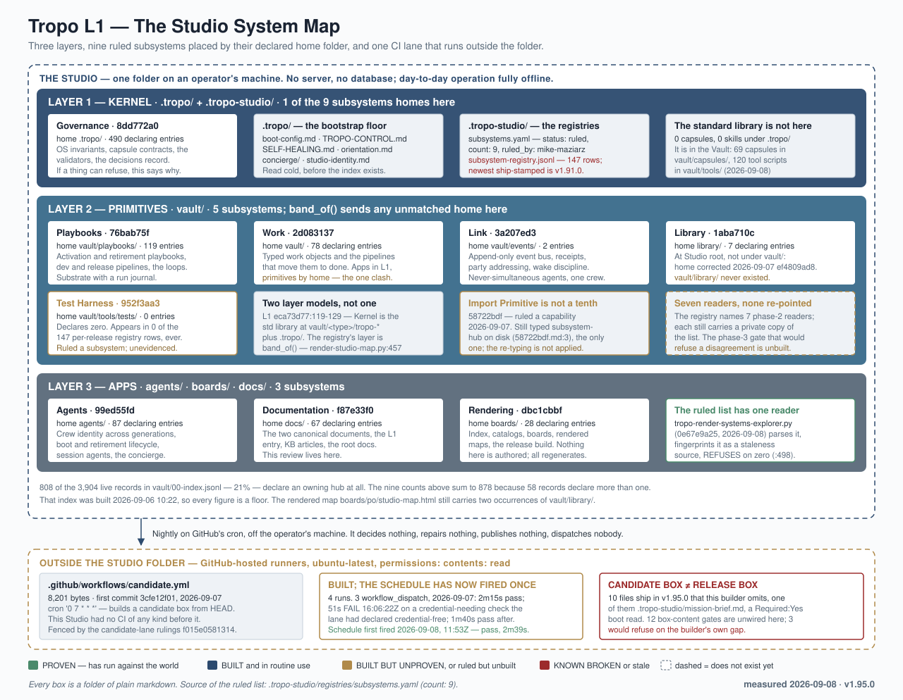
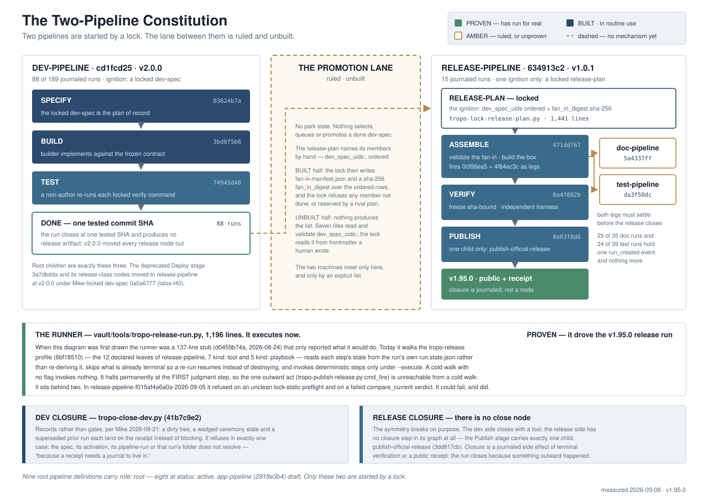
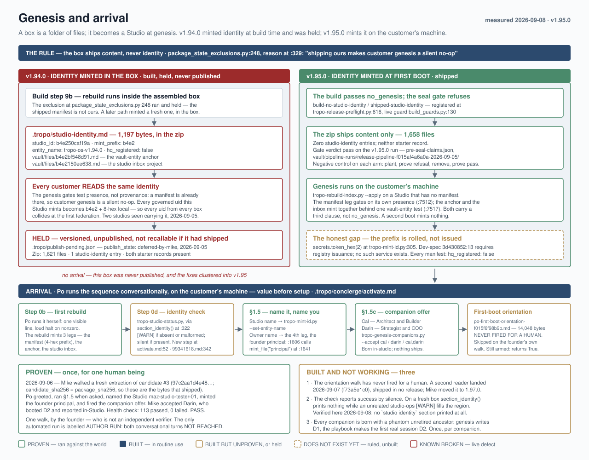

This is the Studio Map for this studio.
Resources
- The Architecture Review — What the system is, why it is shaped this way, and its honest failure record; the Map's sibling canonical document.
- What is Tropo? — the L1 canonical entry — The single entry document: read this first when you are arriving cold and want the whole idea in one pass.
- The Tropo Handbook — The standing reference a human reads end to end: the method, the vocabulary, and how the pieces fit.
- START-TROPO.md — The first-run instructions for a freshly unzipped Studio: the one command to run before you open your AI tool.
- CHANGELOG.md — What changed in this release and every release before it, in the project's own words.
- tropo-ai.com — The public home of Tropo: setup guidance, and the place to point someone who has never seen a Studio.
- Public releases — Every published box, so you can see what is current and what you are running.
The system, drawn
derived from the Review's Appendix A (the captions) and its svg/ folder (the figures, embedded by reference, never redrawn) at render; nothing in this section is hand-written




Hand-written rows verified against the studio tree as of 2026-09-05 (v1.95.0); the layers picture and the resources section are derived at render time.
The 9 subsystems
derived from vault/00-index.jsonl (the 9 hubs and every row's subsystem_hub tag; a shipped box counts only what it ships), each hub's own frontmatter (its home), .tropo-studio/registries/subsystem-registry.jsonl (the last release that touched each), and vault/files/eca73d77.md section 5 (what each owns) at render; nothing in this section is hand-written
| Subsystem | Home | tools | capsules | playbooks | skills | session agents | actions | loops | pipelines | Last release that touched it |
|---|---|---|---|---|---|---|---|---|---|---|
| Tropo Agents The crew. Agent definitions, soul letters, sa.* session-agent specs, agent-boot extensions, identity-continuity primitives. | agents/ | 3 | 7 | 1 | 7 | 18 | 0 | 0 | 0 | none recorded |
| Tropo Documentation Documentation-as-release-deliverable. KB articles, this L1 entry, hub ## Current State bodies, RELEASE-NOTES — the human-readable + agent-readable description of how the system works. | docs/ | 0 | 1 | 1 | 1 | 0 | 0 | 0 | 0 | none recorded |
| Tropo Governance OS rules, ADRs, the operating agreement, validators, enforcement substrate. The substrate that holds everything else accountable. | .tropo/ | 14 | 40 | 1 | 6 | 0 | 0 | 3 | 0 | none recorded |
| Tropo Library Content storage. Studio Manifesto, Tropo Handbook, library docs, packs, crew narratives. The container for content that isn't capsule + script + governance. | library/ | 0 | 0 | 0 | 0 | 0 | 0 | 0 | 0 | none recorded |
| Tropo Link Permanent-Tropo-agent + harness-portable scheduling primitives. The substrate that makes Tropo run autonomously between sessions — scheduled triggers, persistent agent identity across harness restarts. | vault/events/ | 0 | 0 | 1 | 0 | 0 | 0 | 0 | 0 | none recorded |
| Tropo Playbooks Governed procedures. The dev-pipeline + activation playbook + retirement playbook + every workflow that ships. | vault/playbooks/ | 7 | 4 | 15 | 11 | 0 | 0 | 0 | 39 | none recorded |
| Tropo Rendering Build pipeline + artifact extraction; the index-builder + catalog generators at vault/tools/tropo-*.py that turn the vault into something rendered (bootstrap/test scripts remain at .tropo/scripts/). | boards/ | 7 | 0 | 0 | 1 | 0 | 0 | 0 | 0 | none recorded |
| Tropo Test Harness Four-primitive release-gate substrate. Validator + ship-test-plan + cold-boot-walk + agentic test harness composition. The substrate-quality gate every release passes through. Includes the test-pipeline class for per-cycle structural verification. | vault/tools/tests/ | 0 | 0 | 0 | 0 | 0 | 0 | 0 | 0 | none recorded |
| Tropo Work Task / project / decision / release primitives. The work-management capsules + the actual work artifacts. The killer-app subsystem. | vault/ | 0 | 12 | 0 | 3 | 0 | 10 | 0 | 7 | none recorded |
The Studio Map
*The router. One page that tells you where everything is and when to reach for it. It points and never restates — the law lives where the links go, and restating is how maps rot. Sibling canon: the Architecture Review (WHAT the system is and why — read-at-need for architecture work) and, for crew shorthand, the Studio Dictionary (b955b2b8, in design). This Map and the Review are the Studio's two canonical documents (Mike-ruled 2026-08-26), refreshed every release or two by the Metis line at Mike's commission.*
1 · Where you are
Tropo is the operating system (Greek τρόπος, "way"). A Studio is one installation — this folder. The Vault (vault/) is the governed content store inside it. The thesis in one line: as execution cost falls, the binding constraint is human verification bandwidth — so the process is machine-guaranteed and the human verifies results at defined gates. Full statement: mission brief. Identity and invariants: TROPO-CONTROL · STUDIO.md.
2 · The moment index — when to reach for what
*The block that changes behavior. One line per working moment; the link is the depth.*
| You are about to… | Reach for |
|---|---|
| Boot | The mechanism, not this Map: fast-path + digest. First generation: the canonical playbook |
| Scope, design, or rule on a governed domain | python3 vault/tools/tropo-orient.py --task <uid> --as <you> — read the whole neighbourhood; an honest empty answer is a feed-gap finding to file, never a reason to skip |
| Send substantive work to Mike | Dispatch an adversarial reviewer first (commission-quickref); never co-sign a subagent report you did not verify first-hand |
| Verify another agent's claim | Run its locked command verbatim, as a non-author; receipts, not reading |
| Build something new | Scan first: governing briefs/specs in the index, existing implementations in the code, the type's capsule — capsules have the truth; a divergence is a finding |
| Use a capability | The catalogs: tools · skills · session agents · toolbelt. The rule: if it exists, use it |
| Find anything | python3 vault/tools/tropo-vault-search.py "<query>" (add --include-archive for history) · SQLite edges+FTS at vault/00-index.sqlite · project tree vault/00-project-tree.jsonl |
| Create a governed file | python3 vault/tools/tropo-mint-id.py for the uid · the folder's CAPSULE for the rules · tropo-rebuild-index.py --only <uid> to register |
| Delete anything governed | python3 vault/tools/tropo-recycle.py <uid> --reason "…" — never rm |
| Message another agent | tropo-emit-event.py at their party UID — and land the assignment on the governing record in the same gesture; an agent's queue is built from records, not messages |
| Collaborate live this session | Arm an origin watch per the wake discipline: fetch before you listen; a wake is never authority |
| Resume after compaction | python3 vault/tools/tropo-compact-continue.py --agent <slug> — never born |
| Retire | Only when Mike signals. The playbook, all eight steps; the driver verifies them on the world |
| Act on a defect you noticed | Self-Healing: trivial → fix in place; substantive → file in the relevant inbox; never read past it |
| Keep a learning | Tropo memory, never the harness store: append to your agent-memories.jsonl in-session; crew-class goes to studio memory |
| Render for Mike | boards/<agent>/, readable names first, links clickable; questions in the walk format, one per turn, your lean stated |
| Add a gate, check, or process | Answer first: what is the irreversible harm, in one sentence, and what does Mike lose without it? Warn-safe is the default (deb77758); the default is cut |
| Ship | How We Build Software — the process canon: two locks and a fire; then RELEASING.md, the release procedure as it ships |
| Change any output format | Ask "who else reads this?" and visit every reader — the studio's costliest defect family is one fact, two readers, one updated |
| Get lost | This Map §5, then the Architecture Review |
3 · The rules that bind
One line each; the link is the law. The 15 Operating Principles (read the digest at boot; the full file when a rule is in play) · Self-Healing (P0: see it, act now) · Wake Discipline (fetch before you listen) · Human Navigation (the rendered surface is a deliverable) · Canonical Taxonomy (Tropo · Studio · Vault; fix old vocabulary on encounter) · Deletion Discipline (soft-delete only) · warn-safe default (deb77758) · before architectural calls, verify against canon: STUDIO.md, the L0 registry, the type's capsule (OP-11).
4 · The capability surfaces
All generated from the index — read them, never edit them: toolbelt (the core belt) · tool catalog · skill catalog · session-agent catalog. Playbooks live at vault/playbooks/; actions at vault/actions/; loops are type: loop entries in the index. Before spawning any sa.*: commission-quickref.
5 · The location contract — what lives where, and what may not
| Location | Holds | May never hold |
|---|---|---|
.tropo/ | The kernel: the cold-boot floor (thin pointers with degraded floors), the boot digests, generated catalogs, machine flags | Full-bodied reference content; anything with a vault canonical |
.tropo-studio/ | This install's config and institutional memory: operating principles, mission, registries, studio memory | Work items; per-agent substrate |
vault/ | The governed store: every typed artifact at files/<uid>.md, One-Home type dirs (capsules, tools, skills, playbooks, actions, session-agents, agents), the event ledger, run journals | Ungoverned scratch; standalone reference folders |
agents/ | Per-agent homes (activation pointer, capsule, memory, transfers, lineage) + sa.* records | Crew-shared doctrine (that is the vault's or this folder's job) |
docs/ | The two canonical documents — this Map and the Architecture Review — plus the process canon and their assets | Anything else, without Mike's word (see this folder's CAPSULE) |
boards/ | Rendered surfaces for humans | Canonical content (renders are snapshots; regenerate) |
playbook-runs/, vault/pipeline-runs/, vault/loop-runs/ | Machine journals, append-only | Hand edits (seed contracts apply; rulings live in canonical homes) |
tropo-app/ | The L2 cockpit (Next.js) — a window onto Tropo Work, never the store | State that belongs in the vault |
../tropo-releases/, the sibling folder beside the studio | Built release artifacts, one folder per version (tropo_roots.RELEASES_DIR) | Anything an agent edits |
6 · Where the work is
Current cycle and crew: 00-crew-brief (auto-rendered from lineage) · boards at boards/ · a project's 01-inbox, where it keeps one, walks up to the studio inbox · pipelines and runs in the index (type: pipeline, type: pipeline-run) · the release process: How We Build Software.
7 · Reading order
At boot: the fast-path and digest are the mechanism; this Map is a full read (Mike-ruled 2026-08-30 — was a §2-only skim; see boot-fast-path Step 3a). At need: everything §2–§6 points to, one hop away. For depth: the Architecture Review — what the system is, why it is shaped this way, and its honest failure record, re-verified against the live substrate on its own dated schedule.
*The Studio Map | uid 3e581123 | one of the two canonical documents (with the Architecture Review, Mike-ruled 2026-08-26) | refreshed every release or two, Metis-line, Mike-commissioned | it points, it never restates | fingerprint-gated into the boot digest so drift fails loud | replaces the retired kernel index and the hand-maintained sa.* indexes (2026-08-27 consolidation).*
The governed types
derived from the 68 capsule-definition rows of vault/00-index.jsonl; a capsule declares its subsystem in its own frontmatter at render; nothing in this section is hand-written
Tropo Agents · 6 governed types
| Capsule | Version | What it governs |
|---|---|---|
| activation-log | 1.1 | |
| agent | 2.1 | |
| agent-configurator | 2.2 | |
| charter | 1.0.3 | |
| memory | 1.7 | |
| session-agent | 1.6 |
Tropo Documentation · 1 governed type
| Capsule | Version | What it governs |
|---|---|---|
| kb-article | 1.1 |
Tropo Governance · 36 governed types
| Capsule | Version | What it governs |
|---|---|---|
| activation | 1.0.7 | |
| arch-spec | 2.2 | |
| board-snapshot | 1.1 | |
| collection-ref | 3.0 | |
| completion-report | 1.0 | |
| concept | 1.0 | |
| core | 2.2 | |
| decision | 3.3 | |
| design-spec | 2.1 | |
| dev-spec | 1.10 | |
| director.capsule v1.0 — Director-class agents (one class, multiple variants) | 1.0 | Defines the Director-class agent contract. Directors are operational agents with focused charters and full write authority within their lane, dispatched by Mike (the principal) OR any executive. Every director's activation file directs it to enter a continuous wake-call polling loop on boot (per Talos's companion-director reference implementation at agents/talos/directors/) — they check their channels for incoming directives, respond, return to polling. They persist in the dispatcher's session (or across sessions, per variant) and are reachable by crew executives via the channels/*.md file system per declared scope. One class; variants declare configuration along five axes (lifetime / scope / boot substrate / identity persistence / write authority). Codifies the standing service-director pattern (d.pm, d.ops, d.curator) and the companion-director pattern (Talos's ui.director + critic.director, web-deploy-1 cycle 2026-05-17); axes support principal-dispatched + crew-reachable |
| doc-spec | 1.0.2 | |
| document | 3.3 | |
| entity | 1.1 | |
| events — Canonical Event Log Primitive | 1.14 | |
| external-artifact — Capsule Definition v1.4 | 1.4 | Sidecar truth for adopted files; availability gates mounted body and edge derivation from authoritative mount paths. |
| governance-contract | 1.1 | |
| group | 1.0 | |
| kernel | 2.0 | |
| node | 1.0 | |
| Numeric Folder Prefix — Two-Axis OS-Tier Folder Naming Doctrine | 1.0 | Tropo-OS canonical doctrine governing numeric-prefix folder naming across every Studio. Two axes: AXIS 1 numeric ordering (00-09 reserved Tropo-OS workflow-positioned conventions; 10+ available for studio-specific scoped category folders); AXIS 2 terminal positioning (99- as always-last folder-local convention, independent of axis 1). Walked verbatim by Mike-G58 + Metis G58 2026-05-23 during the publish.pipeline design-stage brainstorm; filed as Path 2 finding [7e4c2b81] for Argus canonical capture; LOCKED v1.0 by Argus A81 2026-05-24 captain-mode per Mike-A81 strong-lean calibration (stm-a81-003) as v1.52 P-lane P3 deliverable. |
| playbook-run | 2.1 | |
| reconcile-report — Capsule Definition v1.0 | 1.0 | Structured persona-agnostic report schema for sa.reconciler output. The contract sa.reconciler honors when handing reconciliation findings to the executive. |
| registry | 1.1 | |
| research | 1.0 | |
| ship-artifact | 1.5 | |
| team | 1.0 | |
| team-def | 1 | |
| test-run | 1.1 | |
| test-scenario | 1.1 | |
| test-spec | 1.4 | |
| tool | 1.8 | |
| vault | 1.0 | |
| vault-entity | 1.1 | |
| vault-ops-spec | 1.0 | |
| working-copy — Capsule Definition v1.0 | 1.0 | Markdown working-copy derived from an external-artifact projection. The agent's canonical editing medium for content inside imported binaries. |
Tropo Playbooks · 4 governed types
| Capsule | Version | What it governs |
|---|---|---|
| action | 1.2 | |
| how-to | 1.5 | |
| playbook | 2.6 | |
| publish.pipeline.capsule v1.3 — Typed Primitive for Lightweight Extract-and-Publish Pipelines | 1.3.0 |
Tropo Work · 12 governed types
| Capsule | Version | What it governs |
|---|---|---|
| board-definition | 1.1 | |
| build | 2.2 | |
| chat-session | 1.0 | |
| collection | 1.1 | |
| design-brief | 3.6 | |
| docx-template — Capsule Definition v1.0 | 1.1 | User-uploaded Word template entry. Carries the template binary's location + extracted style metadata + use-case descriptions. The format-reference substrate for `tropo-export.py --template <uid>` transformation export. |
| note | 3.6 | |
| pipeline | 3.4 | |
| pipeline-run | 2.2 | |
| project-plan | 1.5 | |
| subsystem-hub | 1.6 | |
| task | 4.8 |
Unassigned (no subsystem_hub declared) · 9 governed types
| Capsule | Version | What it governs |
|---|---|---|
| capsule-definition — Capsule Definition (the capsule of capsules) | 1.1 | |
| loop | 1.6 | |
| loop-run | 1.0 | |
| os-config — Capsule Definition | 1.1 | |
| principal — Capsule Definition | 1.1 | |
| project | 3.0 | |
| release | 3.14 | |
| release-plan | 1.8 | |
| release-profile | 1.0 |
The rules that bind
derived from .tropo/TROPO-CONTROL.md section 3 and .tropo/boot-digest.md; the law lives at the links at render; nothing in this section is hand-written
OS-level invariants (TROPO-CONTROL.md, section 3; they override everything)
- UID requirement All files with YAML frontmatter must have a
uid:field, minted withpython3 vault/tools/tropo-mint-id.py(the uid as minted: 12-hex composite carrying this studio's prefix; 8-hex only on records that predate the composite flip, 3d430852). - Governance files All governed folders must contain AGENTS.md and CAPSULE.md.
- Operations logging Substantive file modifications are recorded on the typed event bus, not in a shared file: a governed write is evidenced by its own record (event, commit, or run journal), and crew-relevant acts additionally emit a
tropo.broadcast.crewevent with agent ID, action, and path (vault/tools/tropo-emit-event.py --as <agent>). - Registry tracking When files are created or moved, update the appropriate matched primitive: vault entries are tracked via
vault/00-index.jsonl(regenerated byvault/tools/tropo-rebuild-vault.py); agent identity is tracked via.tropo-studio/registries/agent-registry.yaml(hand-maintained); runtime callables (sa.\*/skills/tools) are indexed invault/00-index.jsonlby the same rebuild and surfaced by the generated catalogs.tropo/tool-catalog.md,.tropo/skill-catalog.md, and.tropo/sa-agent-catalog.md; kernel content (capsules/playbooks/skills) is discoverable via folder listing — filename IS the address. - OS files are read-only AGENTS.md and TROPO-CONTROL.md must not be modified by any agent.
- CAPSULE.md is user content The update pipeline never modifies CAPSULE.md unless the manifest explicitly sets the
edit_user_fileflag. - Every file reference must be a clickable link This applies in two contexts — both are non-negotiable:
- Sidecar-as-truth for imported user content Anything that exists only in
vault/and not in a.tropo.mdsidecar (Tier 1) orvault/files/<uid>/metadata.md(Tier 2) is data Tropo can lose on the user's behalf.
Where the work is
derived from .tropo/version.md at render; nothing in this section is hand-written
This studio is at v1.96.0 (.tropo/version.md).